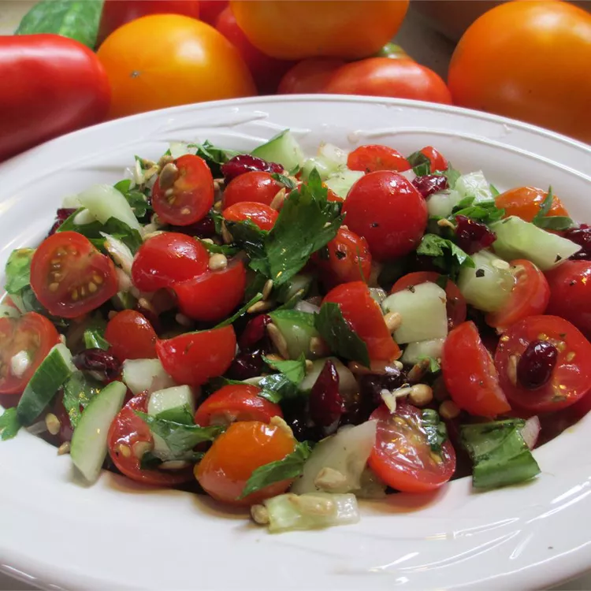

Tomato salad recipes

Cherry Tomato Salad
Ingredients
- 40 cherry tomatoes, halved
- 1 cup pitted and sliced green olives
- 1 (6 ounce) can black olives, drained and sliced
- 2 green onions, minced
- 3 ounces pine nuts
- ½ cup olive oil
- 2 tablespoons red wine vinegar
- 1 tablespoon white sugar
- 1 teaspoon dried oregano
- salt and pepper to taste
Step
- In a big bowl, combine cherry tomatoes, green olives, back olives, and spring onion.
- In a dry skillet, toast pine nuts over medium heat until golden brown, turning frequently.
Stir into tomato mixture.
- In a small bowl, mix together olive oil, red wine vinegar, sugar, and oregano.
Season to taste with salt and pepper.
Pour over salad, and gently stir to coat. Chill for 1 hour.